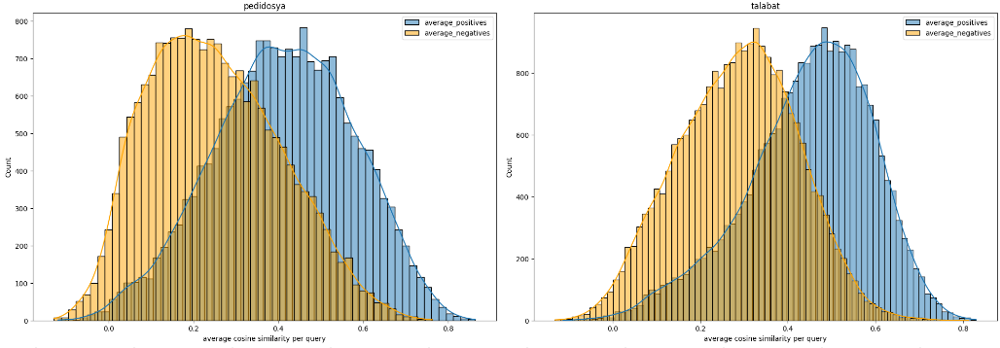

How semantic search projects

FAIL
Roman Grebennikov | Delivery Hero SE | MICES 2024whoami
üîé
- PhD in CS, quant trading, credit scoring
- Findify: e-commerce search, personalization
- Delivery Hero: food search, LLMs
- Opensource: Metarank, Nixiesearch

Delivery Hero

- Last-mile food & groceries delivery
- 70 countries, 20 languages
- 1M restaurants & local vendors
Survivor bias

Survivor bias on conferences

Agenda
üöÄ
- Do embeddings matter?
- Relevance tuning with semantic search
- Multilingual search
- Semantic search halting problem
Product search in Q-Commerce

|
Multi-token, long tail queries üî¥ |
Precision vs Recall

- coca AND cola AND zero: zero results
- coca OR cola OR zero: matches pepsi
- coca AND cola AND (zero OR light): good luck
yay semantic search!
- Embed documents with SBERT/OpenAI
- Install a Vector¬© Search¬Æ Database‚Ñ¢ üöÄ
- ...
- PROFIT
Customer intent
Customer intent

- Relevance is subjective: depends on intent
- Embedding model: no idea about your audience
Bigger models?
demo
Does size matter?

- Big models: more into small details
- Still no idea about customer intent :(
Semantic search relevance tuning
- Lexical search: relevance labels, tinker with retrieval
- Semantic search: relevance labels, tinker with retrieval
First step is still the same
You cannot improve search if you cannot measure it
[0] - github.com/o19s/quepid
Relevance tuning?
- Lexical search: boosts, synonyms, queries
- Semantic search: fine-tuning
Fine-tuning

- Relevant docs: make them closer to query
- Irrelevant docs: make them further from query
What is positive and negative?

- 1 click, 3 impressions = 33% CTR?
Mixing clicks and confidence
- Bayes correction: mix prior and posterior
- Low confidence: strong shift to avg
- High confidence: almost no shift to avg
[1]: Haystack US22: R.Kriegler, Modelling implicit user feedback for optimising e-commerce search
Bayes corrected CVR as label
Bayes corrected CVR as label

demo
Implicit labels are noisy
- High confidence, avg CVR: oops
- Long tail queries: not enough data to reach confidence
Future plans

- LLM relabeling: use explicit labels to fine-tune Cross-Encoder
- Llama3 CE: much faster convergence on small data
- Distillation: train embeddings on re-labeled dataset
[1] - sbert.net: Cross-Encoders
Non-English search
Problem: all MTEB leaderboard models are English
Multilingual search
Guess the amount of non-english train samples:

Out of domain
Food & groceries search - out of domain üò≠
[1] - J.Bergum: Vespa Blog - Simplify Search with Multilingual Embedding Models
Fine-tuning on implicit data üíÄ
Confidence based labels = more bias to English
Hack: up-sample non-English training data (and get more noise!)
demo
Mixed language data
Worked well: mixed language data fine-tuning
Future plans
- Experiment #1: machine-translation assisted fine-tuning
{
"query": ["water", "wasser", "水", "ماء", "agua"],
"positive": ["Oasis Drinking Water", "Oasis Trinkwasser", "綠洲飲用水"],
"negative": ["Coca-Cola Zero", "可口可樂零"]
}

Semantic search halting problem
Problem: semantic search always has something found
demo
Finding a perfect threshold
Attempt #1: set 0.7 as threshold => 70% zero results
Attempt #2: similar queries?
Ecommerce: a lot of repeated queries!
- Find a "good enough" threshold for all seen queries
- Threshold of unseen query = avg(threshold of top-N seen q)
FAIL: too much noise
Threshold depends on the model!
InfoNCE training temperature: model confidence level
Query length and threshold
Longer the query - higher the cosine similarity!
Language and threshold
Left: Spanish, right: Arabic
More training data = more model confidence!
#3: language/token threshold
Pre-computed thresholds:
- Single and multi-token
- Per each brand (and language)
- e5-base-multilingual: temp=0.05, range=0.62..0.70
Does it work?
A/B test: Control vs Hybrid for 2+ tokens
| Region | GMV | Orders | Clicks | Click pos | ZRR |
| SA | +3.9% | +1.6% | +4.2% | -3.4% | N/A |
| UAE | +0.7% | +0.7% | +2.5% | -2.4% | -40% |
| APAC | +1% | 0% | +1.2% | -1% | -27% |
| Turkey | +0.6% | +0.4% | +1.14% | 0% | N/A |
| Latam | 0% | 0% | +0.5% | 0% | -12% |
Does it work? (yes/no)
- Depends on baseline: tough to beat well-built lexical search
- Focus on recall: use reranking for precision
- Should you fine-tune: yes
Links
- Linkedin: linkedin.com/in/romangrebennikov/
- MTEB Leaderboard: huggingface.co/spaces/mteb/leaderboard
- Sentence-transformers v3: sbert.net/